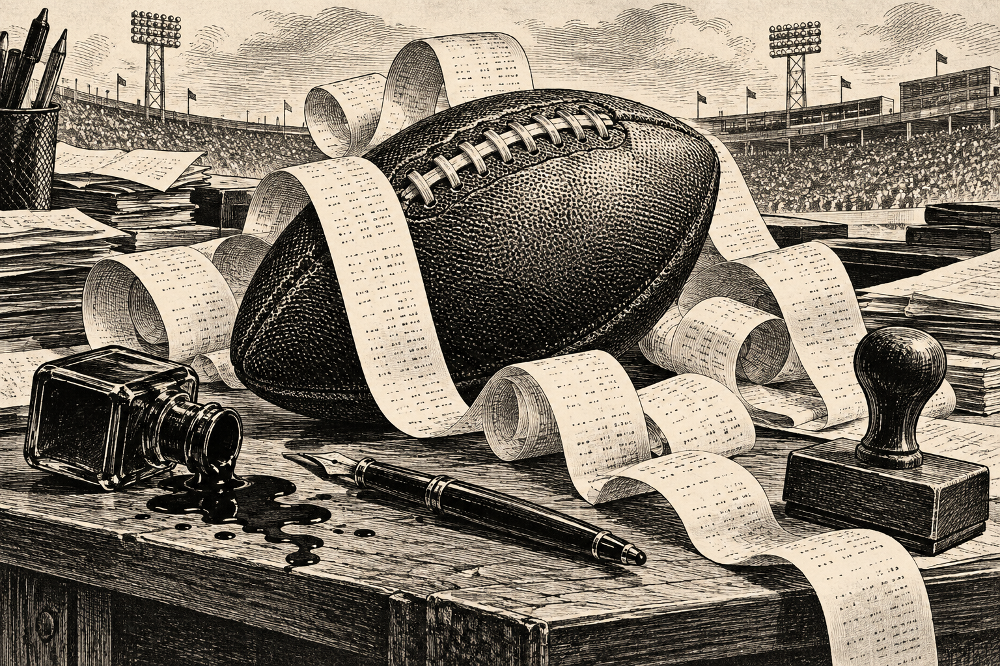

Week two, on the record01 / The lead
THE RECEIPTS
BEGIN.
Preseason confidence meets the scoreboard.
Everyone would like a word with the editor.

Two weeks into the season, every August opinion can now be held against its owner. The undefeated have declared themselves visionaries. The winless have discovered the phrase “long season.” Everyone else is one hamstring away from blaming the schedule.
The football shares the front page with Palm Springs. Chris's bachelor-party attendance has become a live futures market. Tyler responded to roster trouble by announcing that he simply does not trade. Herbeck says the threat of the mermaid punishment motivated his team.
And once again the League Weekly archive has proven that forgetting is for amateurs.
“Week 2 did not settle the league. It simply gave everyone better evidence for the arguments they were already making.”